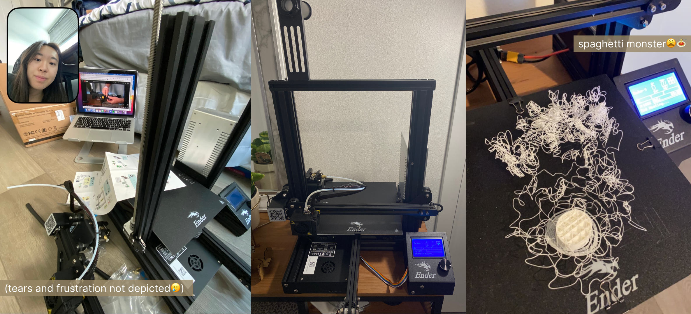

A4: Subtractive Manufacturing!
Nov. 1, 2022
When I heard that we had the option to either use the CNC Mill or 3D printer, I immediately gravitated towards 3D printing as I thought it would be more convenient and a lot easier to do... I was wrong. Creating a box was harder than I expected.
Assembling wasn't that bad when following the videos. The most frustrating part was leveling the bed. It took me 2 days and some sleep to get things somewhat leveled out. I leveled the bed a dozen of times and ran multiple bed leveling protocols from Filament Friday. I figured that the bed wasn't the issue... it was the Z-axis. The right side of the Z-axis seems to be wiggly and tend to drag along with the left side of the Z-axis. I had to disassemble the parts and made sure the knobs were secured tightly. I had to download a leveler app to confirm that the bed was leveled properly. After countless hours of trying to figure out what went wrong, it all FINALLY came together!

Source Files
Rhino (.3dm))/a>Cura (.stl)
gCode
Return to Main